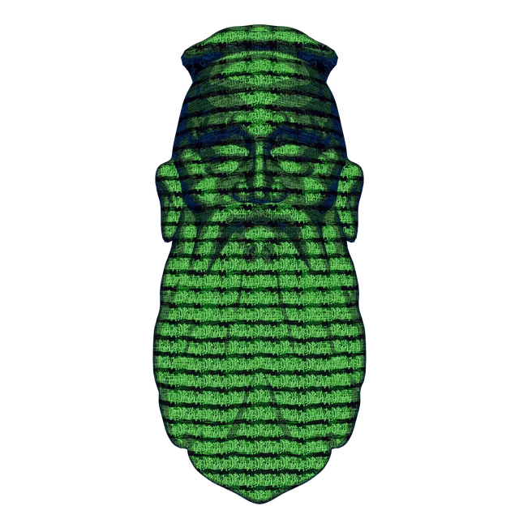

Konfuzius
Kong Qiu, genannt Kongzi / Konfuzius („Meister Kong")
Konfuzius lebte im 6./5. Jahrhundert v. Chr. in einer Zeit politischer Zerrüttung im alten China. Er war Lehrer, Berater und Beamter und versammelte einen Kreis von Schülern um sich, denen er beibrachte, wie man ein rechtschaffenes Leben führt und einen Staat gut ordnet. Selbst hinterließ er keine Schriften. Seine Gedanken sind in den Gesprächen (Lunyu / Analekten) überliefert – kurzen Dialogen und Aussprüchen, die seine Schüler nach seinem Tod sammelten. Aus diesen Fragmenten wurde eine der einflussreichsten Denktraditionen der Weltgeschichte, die das gesellschaftliche Leben Ostasiens bis heute prägt.
Für Konfuzius wird ein Mensch nicht als Einzelner glücklich, sondern in seinen Beziehungen. Ein gutes Leben heißt, seine Rollen – als Kind, Elternteil, Freund*in, Bürger*in – gut auszufüllen und so zu einem harmonischen Miteinander beizutragen. Das klingt konservativ, ist aber anspruchsvoll: Es geht nicht um bloßen Gehorsam, sondern darum, die eigene Haltung so zu bilden, dass man das Richtige aus innerer Überzeugung und mit echter Zuwendung tut. Das gute Leben spielt sich ganz im Diesseits ab – in Familie, Arbeit, Gemeinschaft und Staat. Kultiviert wird es durch lebenslanges Lernen und durch die tägliche Übung im rechten Umgang mit anderen. Der Weg zum guten Leben führt also nicht nach innen oder in ein Jenseits, sondern mitten in die soziale Welt hinein.
Das Ideal ist der junzi, der „Edle" oder vorbildliche Mensch – nicht durch Geburt, sondern durch Charakterbildung. Seine zentrale Tugend ist ren: Mitmenschlichkeit, die Fähigkeit, den anderen wirklich wahrzunehmen und ihm zugewandt zu begegnen. Ein guter Mensch beherrscht die Formen des respektvollen Umgangs (li), handelt aufrichtig und maßvoll und behandelt andere nach dem Grundsatz der Gegenseitigkeit. Wichtig: Für Konfuzius ist Selbstkultivierung kein privates Projekt, sondern hat immer die Gemeinschaft im Blick. Man verbessert sich nicht für sich, sondern um ein besseres Gegenüber, Familienmitglied und Mitglied der Gesellschaft zu werden.
- Ren (仁, Mitmenschlichkeit)Die Grundtugend; echte Zuwendung zum anderen, oft als „Menschlichkeit" übersetzt. Kern allen guten Handelns.
- Li (禮, Riten / Anstand)Die überlieferten Formen des Umgangs, von der Höflichkeit bis zur Zeremonie; sie geben dem guten Willen eine verlässliche Gestalt.
- Junzi (君子, der Edle)Der vorbildliche Mensch, der Charakter durch Bildung erworben hat; Gegenbild zum kleingeistigen, nur auf Vorteil bedachten Menschen.
- Xiao (孝, Ehrfurcht gegenüber den Eltern)Die Achtung vor Eltern und Vorfahren gilt als Wurzel, aus der alle weitere Mitmenschlichkeit erwächst.
- Shu (恕, Gegenseitigkeit)Die Regel: „Was du selbst nicht wünschst, das füge auch anderen nicht zu."
- Zhengming (正名, Richtigstellung der Namen)Wer „Vater" oder „Herrscher" genannt wird, soll die Rolle auch wirklich ausfüllen; Wort und Tat müssen übereinstimmen.
Ein Schüler fragt Konfuzius, was Ehrfurcht gegenüber den Eltern bedeute. Die Antwort sinngemäß: Heute meinten viele, es genüge, die Eltern zu versorgen – aber auch Hunde und Pferde versorge man ja. Ohne echte Achtung sei das kein Unterschied. Das ist typisch konfuzianisch: Die äußere Handlung (den Eltern Essen bringen) reicht nicht; es kommt auf die innere Haltung an, mit der man sie vollzieht. Übertragen auf den Alltag: Eine Kollegin höflich zu grüßen, während man sie innerlich geringschätzt, ist für Konfuzius leer. Erst wenn Form (li) und echte Zuwendung (ren) zusammenkommen, entsteht gutes Handeln. Die Riten sind kein Selbstzweck, sondern die Übungsform, in der sich eine gute Gesinnung überhaupt erst ausbildet und zeigt.
Wir haben Konfuzius ausgewählt, weil er das entschiedenste Gegengewicht zum westlichen Individualismus bildet. In seiner Ausrichtung steht er klar auf der diesseitig-handelnden Seite: Das gute Leben ist praktisch, sozial und in dieser Welt verankert, nicht in Innerlichkeit oder Transzendenz. Vor allem aber denkt er zutiefst relational und gemeinschaftlich: Das Selbst ist für ihn kein Ausgangspunkt, sondern ein Ergebnis von Beziehungen. Ich werde erst ich durch meine Bindungen an andere.
Damit besetzt er einen Pol, an dem sich die Anderen reiben. Wo Harriet Taylor und John Stuart Mill die individuelle Freiheit ins Zentrum rücken und Nussbaum nach den Fähigkeiten des Einzelnen fragt, verschiebt Konfuzius den Schwerpunkt vollständig auf das Gefüge der Beziehungen. Zugleich steht er nah bei Sophie Olúwọlé, deren Yoruba-Philosophie das Selbst ebenfalls gemeinschaftlich fasst – beide bilden in der Anordnung den relational-gemeinschaftlichen Grund. Die Tugendperspektive teilt er mit Aristoteles, doch während dieser das gelingende Leben des Einzelnen anvisiert, misst Konfuzius es am Gelingen des Miteinanders.
- Konfuzius: Gespräche (Lunyu / Analekten) (Primärwerk, dt. Übers. z. B. Reclam)
- Mark Csikszentmihalyi: „Confucius", Stanford Encyclopedia of Philosophy — plato.stanford.edu